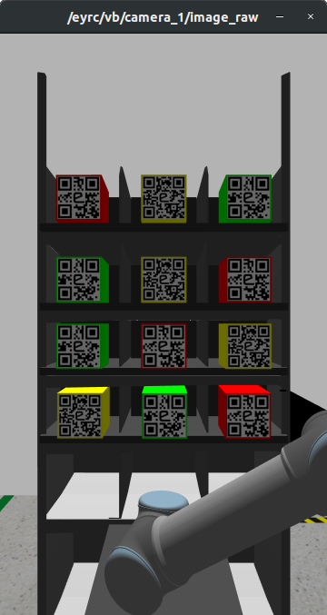
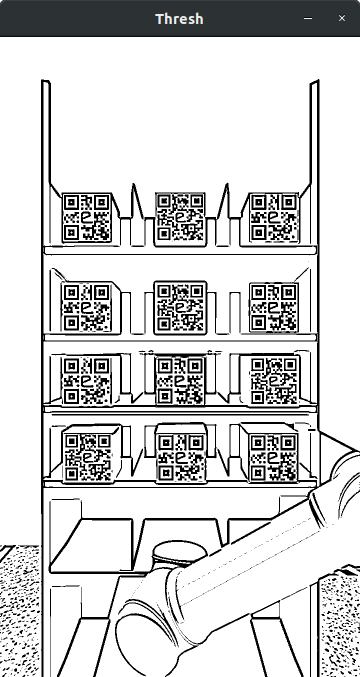
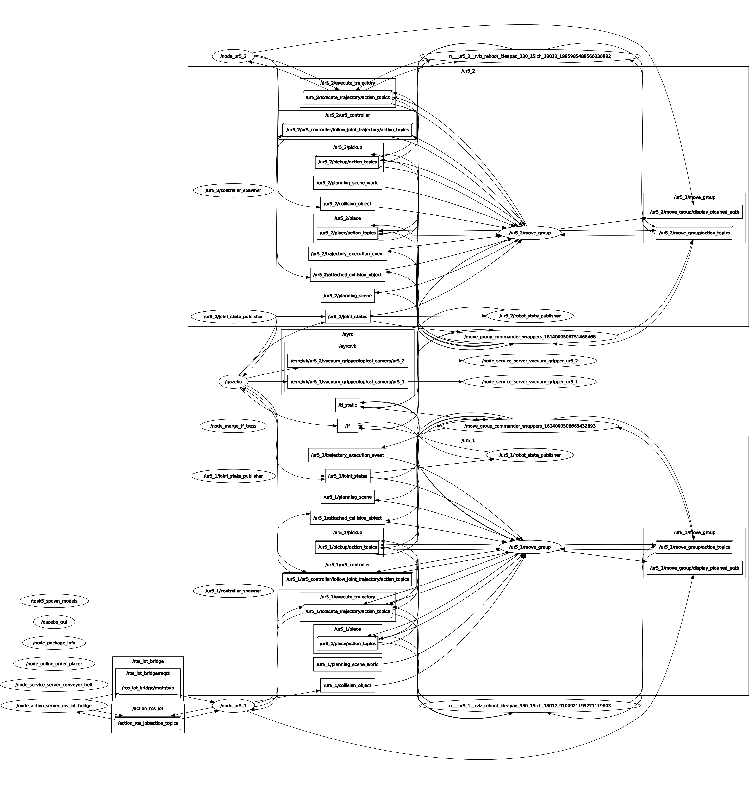

Vargi Bots’s documentation¶
This whole project was part of the e-Yantra Robotics Competition organized by IIT - Bombay. The assets used belongs to e-Yantra. The primary aim of the project is to automate the warehouse. Vargi is taken from a Sanskrit word, Vargikaran (वर्गीकरण) which means to separate objects based on their category. The theme is set in the abstraction of a warehouse management system designed in Gazebo, which is a 3D dynamic simulator used to efficiently simulate robots in complex environments.
Introduction¶
We all have ordered something online, for us it arrives at a click of a button. But behind the scenes, there is a whole complex logistics chain compromising of many people, who work day in and night out to deliver the item you ordered. As humans we are prone to mistakes and cannot work with maximum efficiency all the time. So what if, all these was automated?
Compared to humans, robots can work at maximum efficiency all the time, and are less prone to mistakes. So working on the same idea here we present to you a completely automated warehouse. As a strong belivers in Industrial Revolution 4.0, everything in this warehouse is automated!
So how it works? / What is the flow?¶
As soon as an order is received by the warehouse a camera looks at the available packages on the shelf, finds the position of the required package on the shelf and sends that position to a robotic arm. The robotic arm used in this warehouse is UR5. The arm goes to the given position and grabs the package using vaccum suction, and places it on the conveyor belt. There is another UR5 robotic arm on the other end of the conveyor belt. This arm picks up the package and puts it inside a bin, there are 3 diffrent bins, each representing 3 different priority orders. This arm detects the package with the help of yet another camera this time present on top of the conveyor belt
If those too many sentences confused you here is a simplified bullet points version of the above paragraph.
- Order is Received by the Warehouse
- A camera scans for available packages on the shelf
- Camera finds position of the required order (package) on the shelf
- A robotic arm moves to the position of package, given by camera
- Robotic arm grabs the package and places it on a moving conveyor belt
- Another camera present on the other side of the conveyor belt looks for that package
- After detecting that package, it triggers the second robotic arm which is also present on the other side of the conveyor.
- The second robotic arm grabs the package from the moving conveyor and places it inside a bin, from where it can be loaded and delivered.
This is sort of a brief summary of what we have done.
Here is our implementation Video of the same: https://www.youtube.com/watch?v=dQw4w9WgXcQ
Concepts Used for the implementation¶
- Robotic Operating System (ROS)
- Robotic Manipulation
- Robotic Perception
- Internet of Things (IoT)
- Google App Scripting
- Javascript
- Python
Implementation¶
So now, let’s get into specific nitty gritty details of the implementation.
Incoming Orders¶
The orders are sent via the MQTT Protocol. MQTT or Message Queue Telemetry Transport protocol is a publish/subscribe, extremly simple and lightweight protocol. This publish/subscribe model allows MQTT to communicate as one-to-one, one-to-many and many-to-one. It is popular among use cases where there is low bandwidth, high-latency or unreliable networks. MQTT also provides us with a parameter called Quality of Service (QoS).
Let us discuss few of these terms in some details:
- Publisher: The publisher publishes the message
- Subscriber: The subscriber receives the message
- QoS: MQTT protocol provides us with 3 QoS, they are as follows
- QoS0: Message is sent but no confirmation is received
- QoS1: Message sent atleast once, but duplicates may be received
- QoS2: Most Reliable one, here duplicates are controlled by making sure message is sent only once.
There is also a concept of MQTT Topics (which is similar to ROS Topics) and MQTT Broker (Broker serves as middle man through which messages are sent and received) which are not dicussed in details here
So the incoming orders are sent via the MQTT protocol, using QoS0 and under the topic ‘/eyrc/vb/iOeCqZLl/orders’
These orders are received by the ROS node ‘node_action_server_ros_iot_bridge’. After receiveing them, it publishes them to a ROS topic ‘/ros_iot_bridge/mqtt/sub’. This is done inorder to make the other ROS nodes listen to what the incoming order is, and act accordingly. The ROS node ‘node_action_server_ros_iot_bridge’ also publishes it a Google sheet.
There are three diffrent priority of orders:
- High Priority (HP): These are the orders for Medicines
- Medium Priority (MP): These are the orders for Food Packages
- Low Priority (LP): These are the orders for Clothes
One of the aim is to reduce the delivery time such that HP order takes the lowest time and LP order can take the most time to be delivered among these 3 priority.
In other words, the delivery time for these diffrent priority orders should be as: HP < MP < LP
Identifying Packages From Shelf¶
The process of identifying packages from the shelf runs indepedently from the Incoming Orders. So whether we are receiving order or not, a camera scans the shelf and saves list of all the available packages along with it’s priority as a key value pair. This is done only once per run. The ROS Node used to do this is node_package_info.
The packages are color coded as well as have QR code on them, to help us identify it’s priority. The color code - priority relation is as follows:
- Red Color - High Priority
- Yellow Color - Medium Priority
- Green Color - Low Priority
So, in order to identify the package and it’s priority we had two options. The first, to figure out the package colour by isolating other colours. The second, to read the QR data on the package. We have selected second approach as that seemed much simpler and faster.
Here is what the camera stream looks like
This camera stream is published on the ROS Topic ‘/eyrc/vb/camera_1/image_raw’.
Processing the camera feed¶
As you can see from the above image the camera feed is a bit dull and smooth, basically not great to read the QR Code directly. As a result, a bit of preprocessing was required. So here are all the preprocessing steps we followed:
1. Converting to Grey Scale: Since we are going to read the QR code, there was no need of the colors in the image. So we stripped the image from it’s colors.
2. Bluring it: It may seem a bit odd to blur out the image, but it helps to reduce all the noise present in the image and we are left with only the major constitunets of the image. The Bluring technique we applied was Gaussian Blur.
3. Binarizing it: Binarizing means converting the image to black and white i.e. each pixel can either have a value of 0 (black) or 255 (white), nothing in between. The Binarization aka Thresholding technique we used was an adaptive thresholding, consisting of adaptive thresh gaussian method. Binarizing makes identifying QR code very much simpler.
Here is what the image looks like after processing it
All these processing on the image was done using OpenCV library and pyzbar was used to read the QR Codes from the image. Once all the packages are identified they are saved as key value pair along with its priority, it is published on the ROS topic ‘/pkg_task5/package_info’.
All this package information is also uploaded to a google sheet using a ROS node called node_action_server_ros_iot_bridge
Dispatching The Package¶
Dispatching here means, picking up the ordered package from the shelf and placing it on the conveyor belt.
Dispatching is done by a UR5 robotic arm, this arm has a vaccum gripper as it’s end effector (EE). The ROS node which controls this arm is named node_ur5_1 and it is subscribed to the ROS Topics ‘/pkg_task5/package_info’. and ‘/ros_iot_bridge/mqtt/sub’ hence it has all the necessary information like incoming orders and priority of the packages on the shelf.
How to dispatch HP orders packages first?¶
Once an order is revceived it saves the order in a dictionary, and also saves it in a seprate list based on it’s priorirty. There are 3 different lists for 3 different priority of orders.
After saving the order, it will check the list of High Prioriry packages, if it is not empty (meaning there is a high priority order left to dispatch) it will start processing it. And if the list is empty, it will check the list of Medium Priority packages, and again, if it is not empty, it will process it. Lastly, it will check the list of the Lower Priority packages and if they are not empty it will process it.
The whole process strictly follows the above order. This helps us to dispatch the higher priority packages first, medium priority packages second, and lower priority packages at last. Thus, helping in the goal of delivering HP orders first, then MP, and at last LP
Moving the UR5 Arm towards the package¶
Once the node selects which order to process, it will find the required package from the available packages. After figuring out which package will be used to fullfill the current order, it will play the correspoinding saved trajectory to reach there.
What is a saved trajectory? and why use it?
A trajectory is the path that the arm will take to reach the destination pose. This trajectory can be caluclated while executing or it can be played from a saved file, when played from a saved file it is called saved trajectory. The reason it is used is to save time. Calculating trajectories can take anywhere from 5 seconds to 90 seconds. Furthermore, sometimes the trajectory plannar may fail to find a solution. Hence using saved trajectory is much more reliable and faster method.
After playing the saved trajectory to reach the package, the arm activates the end effector (EE) in this case a vaccum gripper which grips the package with the help of suction. After gripping, the node plays yet another saved trajectory to put the package on the conveyor. On reaching on top of the conveyor it deactivates its EE and drops the package on top of the conveyor.
With this a package is dispatched successfully.
The node then uploads the dispatched package information like, dispatch date and time along with other order information to the google sheet by sending it as a goal to the ‘node_action_server_ros_iot_bridge’. This node also publishes, the information of the package which it just dispatched on a ROS topic called “/eyrc/vb/onConveyor”.
Shipping The Package¶
Shipping here means, putting the package inside a bin from where it can be delivered.
Shipping is done with the help of yet another UR5 Robotic Arm and a logical camera. The ROS node used to do the shippping is called node_ur5_2. And this node is also subscribed to ROS topic ‘/pkg_task5/package_info’. hence it has the package info, i.e. which package name has what priority. ROS topic “/eyrc/vb/onConveyor” is subscribed by this node, hence it knows which package is currently on the conveyor, and it’s order details.
A logical camera is placed on top of the conveyor and is pointing on the the coveyor belt. As soon as it detects a package, it slows down the conveyor belt a bit and triggers the UR5 to activate its vaccum gripper and grab the package.
After grabbing the package, since it has the order details of the package it finds out it’s priority and puts it inside the respective priority bin. Just like for dispatching the package, here also, we have used saved trajectories to save the time.
What are priority bins?¶
There are 3 different bins, for 3 different priority of orders. One for HP, one for MP and one for LP.
The node then uploads the shipped package information like, shipped date and time, estimated date of delivery along with other order information to the google sheet by sending it as a goal to the ‘node_action_server_ros_iot_bridge’.
RQT Graph¶
Feeling confused from all those long paragraphs? Here is a RQT Graph it contains everything related to ROS, every ROS Topic, ROS Node and ROS Action can be found here.
API Documentation¶
Python API’s¶
Here is the API Documentation of ROS nodes in pkg_task5 and pkg_ros_iot_bridge
Other Files¶
This section includes description of all the message files, YAML files and configuration files.
Files in pkg_ros_iot_bridge pkg¶
1. msgRosIot.action - This is a ROS Action File for the action server, ‘node_action_server_ros_iot_bridge’. This action file consists of goal_protocol, goal_mode, goal_topic, goal_message, feedback_percentage_complete and result_flag_success. These are used by the action client while sending the goal to server, and also used by action server, while sending the result or feedback to the client
2. config_pyiot.yaml - This is a configuration file, consisting of various parameters like mqtt broker url, server port, mqtt topic to subscribe to inorder to get the orders, the name of the ROS topic on which MQTT topics should be published. It also contains data about the google sheet on which all the data about packages, it’s dispatch and shipping info needs to be logged. Lastly, it also contains the email id on which, we need to send the alerts of dispatch and shipping.
3. msgMqttSub.msg - This is a ROS message file, consisting of details like timestamp, MQTT topic from which the message arrived and the message itself. The orders received by the ‘node_action_server_ros_iot_bridge’. is published using this message on the ROS topic ‘/ros_iot_bridge/mqtt/sub’
Files in pkg_task5 pkg¶
1. task5_solution.launch - This is a ROS launch file, running this file will start all the necessary ROS Nodes, along with the Moveit and Gazebo simulator.
2. onConveyor.msg - This is the ROS message file, for the ROS topic “/eyrc/vb/onConveyor”. It contains the data such as order_id, city and package name of the package which is on the conveyor. Publised by the node, ‘node_ur5_1’ and subscribed by ‘node_ur5_2’